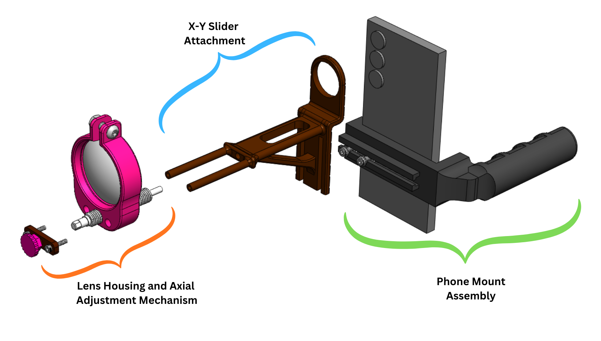
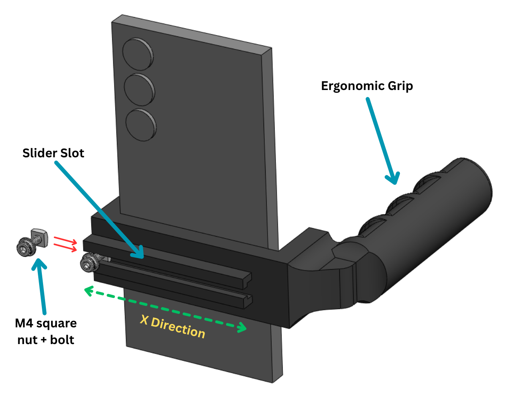
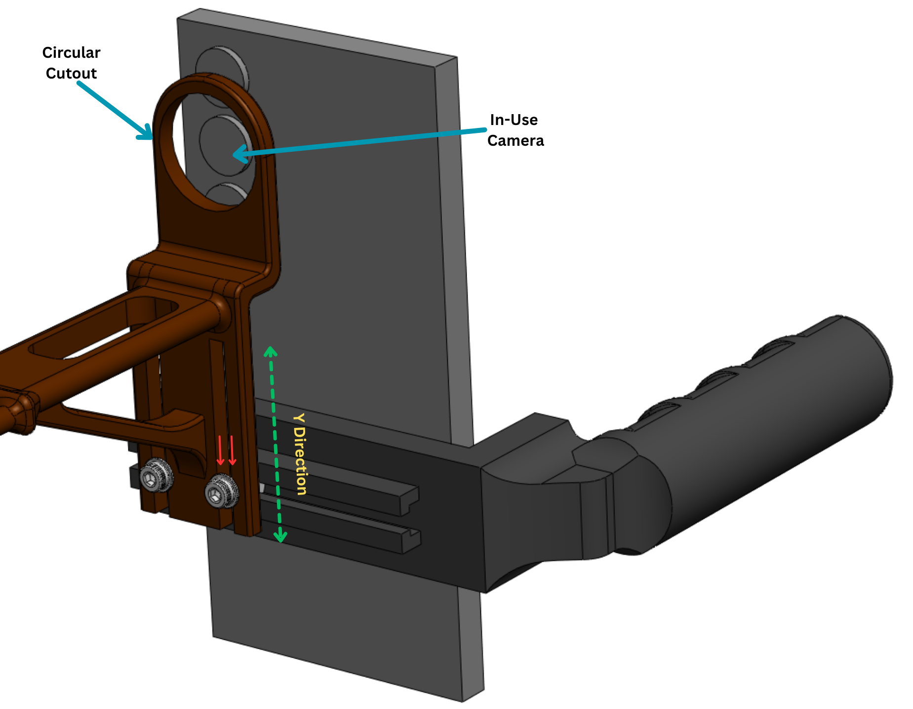
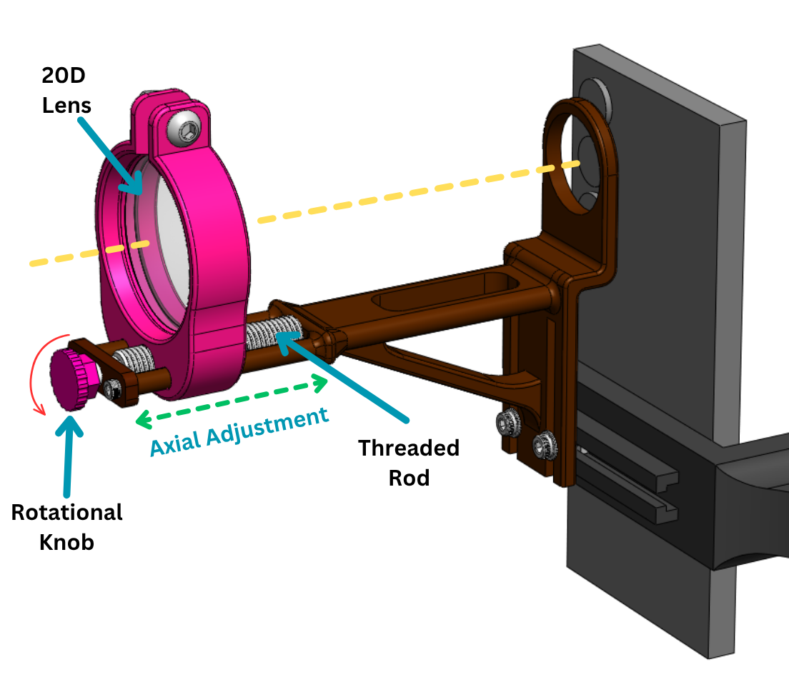
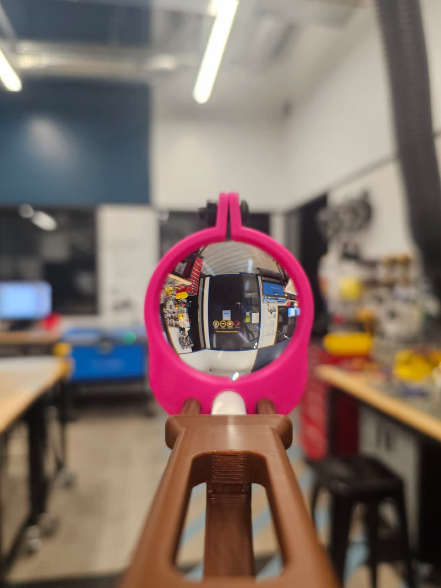

Clarifeye: Affordable AI-Based Fundus Imaging
A fully mechanical, 3D-printed handheld attachment designed to align any smartphone camera with a 20D condenser lens for retinal imaging. It is the hardware half of a course startup concept for AI-assisted eye screening in low- and middle-income countries.

Overview
At a glance
Access to timely screening is severely limited in low- and middle-income countries (LMICs) due to specialist shortages, high costs, and the immobility of conventional imaging devices.
Objective
The problem
Preventable blindness remains a major global health challenge, driven by conditions such as diabetic retinopathy, glaucoma, cataracts, and uncorrected refractive errors.
Existing smartphone-based fundus imaging tools have demonstrated feasibility but face persistent limitations in image quality, device specificity, and workflow integration.
Hardware requirements
From the patent search · Vishek and Vaibhav Mahapatra
- Smartphone-agnostic compatibility.
- Extendable holder: an adjustable mechanism to control the distance between the camera and the lens, enabling optimal focus.
- Modular lens housing.
Approach · Mechanical design
Three subsystems, one optical axis
All CAD, 3D printing, prototyping and assembly: Vishek
The hardware is a fully mechanical, smartphone-based fundus photography attachment designed to align a smartphone camera with an external condenser lens. All major structural components are additively manufactured, and no electronic components are included.
Three subsystems (the phone mount assembly, the X–Y slider attachment, and the lens housing with its adjustment mechanism) together enable planar alignment (X–Y) of the smartphone camera and axial adjustment (Z) of the condenser lens while preserving concentric alignment of the optical axis.
- Full CAD architecture in SolidWorks, with modular components for easy 3D printing and replacement.

I. Phone mount assembly
- Universal phone compatibility, avoiding device-specific designs.
- A custom ergonomic grip, with rigid locking mechanisms to reduce motion artifacts.
- A custom longitudinal slider slot. It houses two pairs of M4 square nuts and M4 bolts, which act as sliding fasteners and form a guided linear track for X motion.

II. X–Y slider attachment
- The attachment slides over the M4 bolts, adding Y motion. Together with the slot, it can be positioned over any camera location on the phone.
- A circular cutout serves as a visual alignment guide:
- Translate in X and Y until the camera lens is concentric with the cutout.
- Tighten the M4 bolts to lock it.
- The cutout and the lens housing are concentrically aligned by construction, eliminating optical axis misalignment once the camera is correctly positioned.

III. Lens housing and axial adjustment
- Designed to house a 20-diopter (20D) condenser lens, retained by a single M6 nut and bolt.
- The underside has one central hole for a threaded rod and two lateral holes acting as linear guide rails. Rotating the threaded rod translates the housing axially toward or away from the camera (Z).
- A rear cap, attached with two M4 bolts, secures the threaded rod; a rotational knob gives manual focus adjustment.

Materials and manufacturing
- All custom structural parts (phone mount, X–Y slider attachment, lens housing and adjustment knob) are 3D printed in PLA, chosen for low weight, adequate strength, ease of fabrication and replacement, and cost-effectiveness.
- Standard fasteners (M4 and M6 nuts and bolts) and the condenser lens are commercially sourced.
- Design advantages: universality across phones, built-in X–Y alignment, axial lens adjustment, lightweight ergonomic construction, and simple, fast assembly with minimal components.
Context · Teammates' work
Downstream software the hardware supports
The attachment is designed to capture images for a downstream software pipeline (image enhancement, stitching, GAN-based restoration and classification) developed by teammates. Vishek had no part in the software, and no performance of this pipeline was measured.
- App (front end): Mrishika Nair.
- AI and backend: Niranjani Komethagavel and Vaibhav Mahapatra.
The demo shows the app's user interface. Analysis results shown are placeholders, not a working diagnosis.
Results
What was built, and its limit
Hardware
- A fully assembled physical prototype was built: a functional handheld prototype with smartphone-agnostic alignment and axial focus control.
- Complete CAD of all three subsystems.
- A lightweight, ergonomic, modular design intended for operation by community health workers.
Design targets (stated, not formally measured)
- Hardware cost: under $100. The prototype was very low cost; no bill of materials was produced.
- Screening time: designed for <4 min screening. The app workflow demo completes in under 30 s, using the app alone with no fundus hardware attached.
- The prototype held the correct 20D condenser lens, but without a ring light for illumination the fundus could not be seen, so no retinal image was captured with the hardware. No clinical testing was done.

Engineering challenges
Design decisions and iterations
Responding to existing adapter designs
Limitations found in the patent search
- Adapters that only fit phones with the camera in one position (top-left corner, or centred) → X–Y alignment to any camera position.
- Designs that require a separate ophthalmoscope → a standalone condenser-lens attachment.
- A curved design that complicates prototyping and alters camera–lens distance → a straight, rail-guided axial adjustment.
Decisions and iterations
- Fully mechanical: no electronics in the prototype. A custom ring light was a future concept and was skipped for the course, which is the missing piece needed for the hardware to image the retina.
- Prototype iteration: the latest prototype used a commercially available phone mount, with the slider slot attached externally, in place of the custom mount. The X–Y slider and lens housing are identical to the proposed design. Iterating on commercial mounts refined alignment, stability, and usability.
- Material: PLA, for weight, strength, ease of replacement and cost.
Team
Credits
- Vishek MasaliaHardware Design Lead (all CAD, 3D printing, prototyping, assembly); patent search.
- Niranjani KomethagavelOriginated the idea; AI/ML and backend; market research.
- Vaibhav MahapatraAI/ML and backend; patent search.
- Mrishika NairFront-end and mobile app developer; built the app and the working demo; market research.
Course startup-concept project (EN.520.427); work ended in Dec 2025. Not a medical device and not clinically validated.